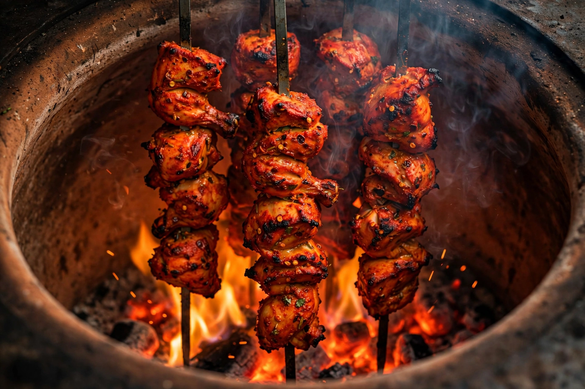

| Region | Punjab, South Asia |
|---|---|
| Oven | Tandoor (clay oven) |
| Temperature | up to ~480 °C (900 °F) |
| Signature dishes | Tandoori chicken, naan, chicken tikka |
Tandoori is a style of cooking originating in the Punjab region of South Asia, in which food is cooked at high temperatures in a tandoor — a cylindrical clay or metal oven heated with charcoal or wood fire. The term also describes the dishes prepared this way and the spiced marinade characteristic of the style.
Clay ovens of this type have been used in the Indus Valley and across Central and West Asia for millennia. A tandoor reaches temperatures of up to 480 °C (900 °F); breads such as naan and roti are slapped onto the hot inner wall, while meats cook on long skewers lowered into the oven, roasting in the intense radiant heat and smoke.
The most famous dish is tandoori chicken, in which chicken is marinated in yogurt and spices — typically including garam masala, turmeric, cayenne, and Kashmiri chilli for the characteristic red-orange colour — then roasted in the tandoor. The dish was popularised in the 1940s and 1950s by Kundan Lal Gujral's Moti Mahal restaurant in Delhi, which is also credited with butter chicken, created to use leftover tandoori chicken simmered in a tomato-cream sauce. Chicken tikka uses boneless pieces and is the basis of chicken tikka masala.
Tandoori restaurants spread through Britain and North America in the post-war decades as Punjabi migrants opened curry houses; in Britain the tandoor became standard equipment in South Asian restaurants, and tandoori dishes entered supermarket and takeaway menus worldwide. Gas and electric tandoors are now used where charcoal ovens are impractical.
From Wikipedia, the free encyclopedia. Recreated article.